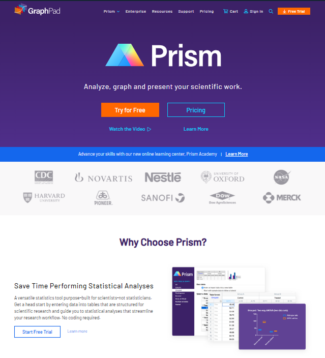
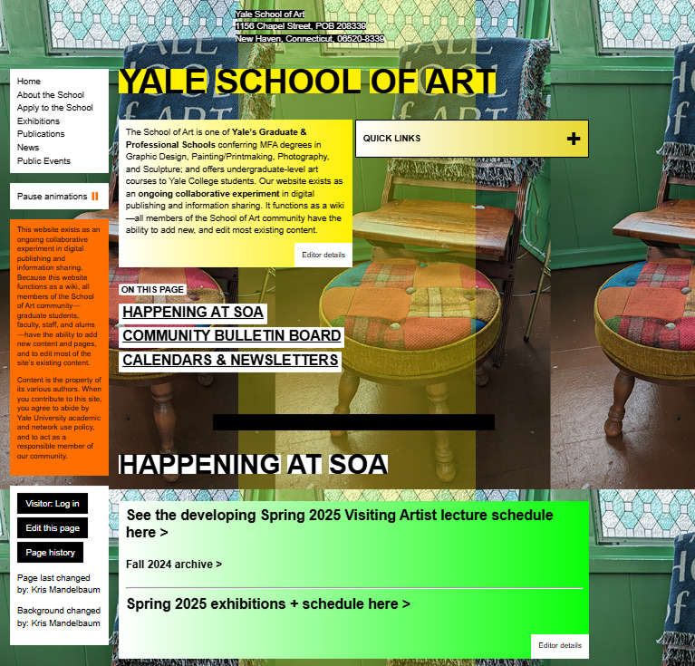

[INSERT SUBHEADING HERE PLZ]
Welcome to a short guide on what to do, versus what not to do when it comes to creating an accessible and CRAP-oriented website. We will look at two examples, one utilizing CRAP principles and the other looking like crap. To start with the good, looking at the Prism page off of graphpad.com.
The Prism page utilizes all four principles very well and we will go over each. When it comes to contrast, the page has a more eye catching header with the deep purple background compared to the body with the paler white background. To dive deeper into the header, we also see great use of contrast with the bright orange buttons compared to the background, making them pop out to the user. Lastly, the headers of each section are that purple color from the header, which provides good contrast to the black text in the main data and the black background. It is also bolded nicely, giving much more attention to the user rather than the thinner the body data.
Moving on to Alignment, the page is here is center-aligned with appropriate padding on each sides. A good example here is in the header. Look at how the buttons align with the start of the title Prism and paragraph underneath, all on the same starting edge. This is masterful use of edge alignment! Touching on Repetition, we could look at the repeating styles of the navigation links at the top of the page, making it so the user knows exactly what they are. That, as well as the repetition of the “Start A Free Trial” button styles, making it clear that the orange button will be talking about the page’s promotions. Lastly, Proximity is well done with both the padding on the sides of the page as well as the placement of all the elements. All navigation links are placed next to each other, data and the graphics describing the data is next to each other, all of it is placed well, therefore good use of Proximity.
Now to cover what not to do. While we are going to use an extreme example, please remember to follow the upper examples to create a clear and smooth user experience on your page. We will be covering the one and only, Yale School of Art webpage (https://www.art.yale.edu/).
When it comes to Contrast, you can certainly say there is a lot. Sadly in this case, there is far too much. From nearly every color in the rainbow, as well as nearly every ounce of text on the page in a different style, it is very difficult to read and understand anything we are seeing. As well as, the infamous repeating chair background which just makes harsh lines on the pages style. For repetition, since there is so much contrast, there is actually practically no repetition. Nearly nothing repeats, besides of course, the background. Moving swiftly onward to Alignment, we can clearly see that the webpage does not even use half of it’s width, left-aligned with much of it’s content smushed in long columns. The elements are aligned sporadically, making it hard for the user to maintain focus on one. Lastly, with Proximity, it is with the case of alignment, where everything is placed very sporadically, and it is just difficult to really see what is what.
With gone over both examples, we hope this helps see the power of using CRAP principles, and how big of a difference it makes to your site.